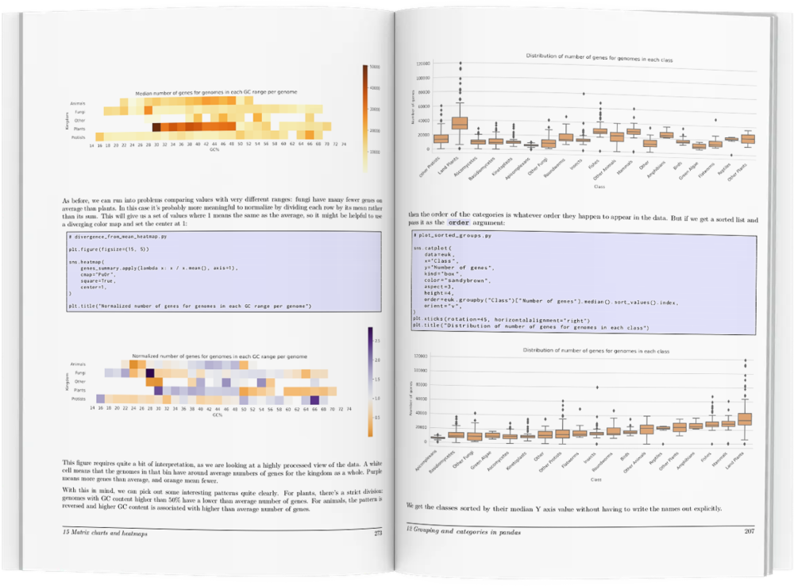

Time to get to grips with your data
With Python, pandas and seaborn in your toolbox, you too can develop data exploration superpowers.
We’re currently in a golden age of data. It’s never been easier to assemble large datasets to probe questions in almost any field.
But these large datasets come with their own problems:
-
How to clean and validate data?
-
How to combine datasets from multiple sources?
-
And how to look for patterns in large, complex datasets and display your findings?
These are the questions that we all ask when we start working with these rich data sources.
The solution to these problems comes in the form of Python’s scientific software stack. The combination of a friendly, expressive language and high quality packages makes a fantastic set of tools for data exploration.
But the packages themselves can be hard to get to grips with. It’s difficult to know where to get started, or which sets of tools will be most useful.
You may have already encountered this. If you look at the matplotlib website, it’s clear that it’s a powerful charting tool - but looking at the tutorial can be daunting. The same goes for pandas: it can carry out almost any type of data manipulation, but that same power makes it hard to get to grips with.
Happily, learning to use Python effectively for data exploration is a superpower that you can learn. With a basic knowledge of Python, pandas (for data manipulation) and seaborn (for data visualization) you’ll be able to understand complex datasets quickly and mine them for insight.
You’ll be able to make beautiful, informative charts for posters, papers and presentations, and rapidly update them to reflect new data or test new hypotheses.
And you’ll be able to quickly make sense of datasets from other projects - millions of rows of data will no longer be a scary prospect!
In this book, I have drawn on years of teaching experience to give you the tools you need to answer your data exploration questions. Starting with the basics, you’ll learn how to use Python, pandas, seaborn and matplotlib effectively using real world examples throughout.

Just the best bits
of the best data exploration packages
Rather than overwhelm you with information, the book concentrates on the most useful parts of the relevant libraries. Full color illustrations show hundreds of examples covering dozens of different chart types, with complete code samples that you can tweak and use for your own work.